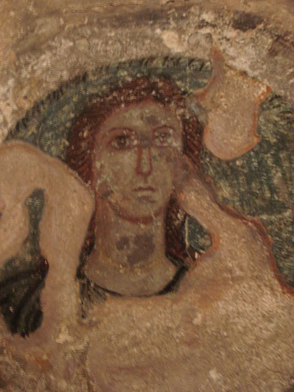
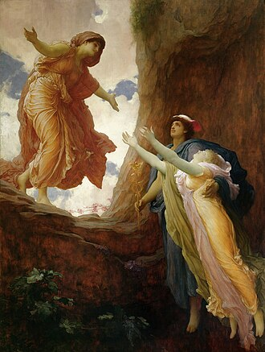

Деме́тра (др.-греч. Δημήτηρ, от δῆ, γῆ — «земля» и μήτηρ — «мать»; также Δηώ, «Мать-земля») — в древнегреческой мифологии богиня плодородия, покровительница земледелия. Одна из наиболее почитаемых божеств олимпийского пантеона. Атрибуты Деметры — это снопы пшеницы, корзины с цветами и фруктами, символизирующие богатство и плодородие земли, а также маки — символы сна и смерти. Культ богини-матери — покровительницы земледельцев, охраняющей всё живое на земле, уходит корнями ещё в доиндоевропейскую эпоху. У индоевропейских народов её называли Матерью-Землёй (греч. Δημήτηρ, слав. Мать — сыра земля, инд. Prthivi-Matar). Она — «Великая мать», порождающая всё живое и принимающая в себя умерших, воплощение первобытной творческой энергии. В подобной ипостаси (по одной из гипотез) почиталась и Деметра: она считалась покровительницей чародеев, в чём она отождествлялась с великой богиней Гекатой, являвшейся помощницей в колдовстве и единственной помощницей от него. Также её называли Эринией («Мстительницей»), Термасией («Жаркой»), Хтонией («Земной», «Подземной»); её дочь — Персефона — была царицей подземного царства мёртвых. Одновременно Деметра — «благая богиня», хранительница жизни, научившая человечество земледелию. Помощница в крестьянских трудах, наполняет амбары земледельца запасами (Hes.).

Деметра на древнегреческой фреске из склепа в Пантикапее.
Наиболее известен миф о том, как Аид похитил Персефону, и Деметра блуждала по всей земле в её поисках. Через девять дней, поняв, что её поиски тщетны, Деметра обратилась за помощью к Гелиосу, который назвал ей имя похитителя, и Деметра поняла, что Зевс сам уступил брату свою дочь, она бессильна что-либо изменить. Изменив внешность, богиня отправилась скитаться по свету. Её впервые убедил испить Геспер-Атлант, она трижды пересекала любую реку. Она посетила Иду. Во время блужданий громко звала дочь со скалы Анаклетра в Мегарах. В Элевсине Деметра опустилась на камень (позже его назвали камнем скорби) у родника (колодца) Анфиона. Здесь её в слезах увидели дочери элевсинского царя Келея. Богиня не открыла девушкам свою тайну, сказала, что она родом с Крита и была ограблена, попросила для себя работу и кров. Царевны отвели её в дом отца. Входя в мегарон, богиня задела головой притолоку двери, от чего по дому распространилось сияние. Царица Метанира, заметившая это, поняла, что перед ней не простая смертная. Она поклонилась богине и предложила занять своё кресло. Деметра отказалась и, устроившись на простом деревянном сиденье у стола, предалась печали. Она отказывалась от вина и еды, никого вокруг не замечала. Лишь острая шутка служанки Ямбы заставила её улыбнуться. Царица доверила чужестранке уход за своим сыном Демофонтом (по Гигину — Триптолемом). В течение нескольких ночей младенец повзрослел на год. Деметра, желая сделать ребёнка бессмертным, заворачивала его в пелёнки и клала в пылающую печь. Метанира однажды увидела это, подняла крик, велела отдать ребёнка. По одной из версий, ребёнок погиб. Тогда Деметра предстала перед жителями дома в своём божественном обличии и повелела построить ей храм в Элевсине, а у родника (колодца) Анфион за городской стеной — алтарь, взамен пообещав научить их секретам земледелия. В период скитаний Деметры на земле прекратили всходить урожаи. Люди умирали от голода и не приносили жертвы богам. Зевс начал посылать за Деметрой богов и богинь, чтобы уговорить вернуться на Олимп. Но она, сидя в чёрном одеянии в элевсинском храме, не замечала их. Тогда Зевс велел Аиду вернуть Персефону. Аид не посмел ослушаться брата, но дал ей зерна священного граната, чтобы в определённое время года она возвращалась к мужу. Увидев Персефону, Деметра вышла из оцепенения, скинула траурное одеяние и украсила свою голову венком из васильков.

Возвращение Персефоны. Фредерик Лейтон, 1891.